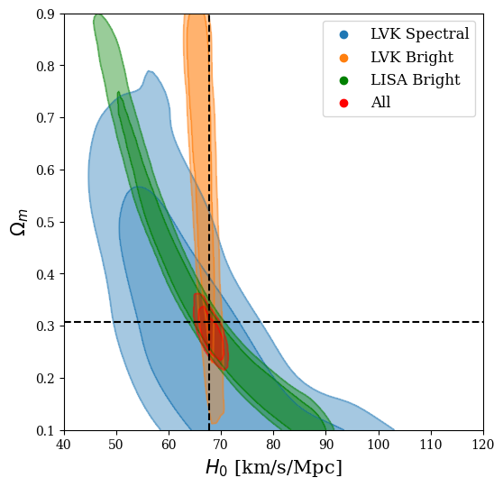
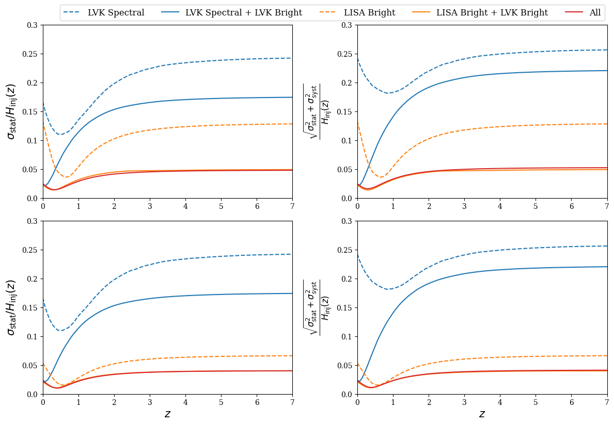

Research / 2025
Listening Across the Cosmic Time: Standard Sirens from Ground- and Space-Based Missions in the Next Decade
Classical and Quantum Gravity, 42, 195002, 2025.
In brief
Gravitational waves measure distances and offer an independent way to trace cosmic expansion. We forecast how ground-based LVK observations and the space-based LISA mission could work together across cosmic time. Combining bright sirens with electromagnetic redshifts gives complementary constraints, while spectral sirens require care: evolution in the black-hole mass population can bias cosmological inference if it is ignored.
Selected figures
Click any plot to view it at full size.
Complementary measurements

Precision across cosmic time

Figures from the original paper (arXiv:2506.24030v3) by Salvarese, A., Chen, H.-Y., Mangiagli, A., & Tamanini, N. Captions are short explanatory summaries.
← Back to all publications